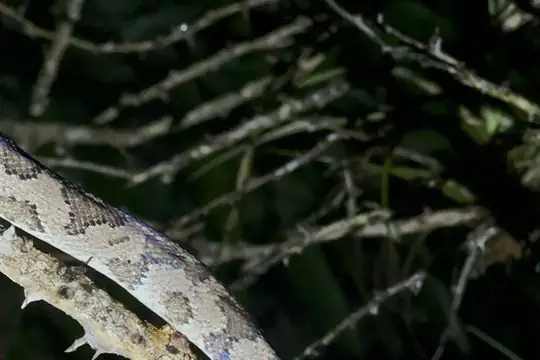
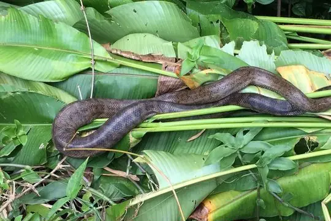

Snakes of Puerto Rico
12 living snake species are recorded in Puerto Rico in SnakeList: 0 venomous and 12 non-venomous, from 3 families.
- 12living species
- 12non-venomous
- 3families
Puerto Rico is a territory, not a sovereign country; SnakeList lists it as a place of its own. These totals count the unique living snake species SnakeList records in Puerto Rico. The 1 species brought here by people (introduced, not native) is listed separately below and is not in the total. A species counts if it is recorded anywhere in the territory, so not every snake lives in every part of it.
Species
Showing 12 species
 Brahminy BlindsnakeIndotyphlops braminus
Brahminy BlindsnakeIndotyphlops braminus Flathead Worm SnakeAntillotyphlops platycephalus
Flathead Worm SnakeAntillotyphlops platycephalus- No photo yetGrant's Worm SnakeAntillotyphlops granti
 Ground Snake (exiguus)Magliophis exiguus
Ground Snake (exiguus)Magliophis exiguus
Mona BoaChilabothrus monensis
Puerto Rican BoaChilabothrus inornatus Puerto Rican Coastal BlindsnakeAntillotyphlops hypomethes
Puerto Rican Coastal BlindsnakeAntillotyphlops hypomethes Puerto Rican RacerBorikenophis portoricensis
Puerto Rican RacerBorikenophis portoricensis- No photo yetPuerto Rican Racer (prymnus)Borikenophis prymnus
 Puerto Rican Racer (variegatus)Borikenophis variegatus
Puerto Rican Racer (variegatus)Borikenophis variegatus Puerto Rican RacerletMagliophis stahli
Puerto Rican RacerletMagliophis stahli Puerto Rican Worm SnakeTyphlops rostellatus
Puerto Rican Worm SnakeTyphlops rostellatus
No snakes in Puerto Rico match.
Introduced to Puerto Rico
Not native here: SnakeList records this snake as brought to Puerto Rico by people.

Puerto Rico’s snakes in numbers
- Families: Colubridae 5, Typhlopidae 5, Boidae 2.
- 8 are recorded in no other country or territory in SnakeList: Grant's Worm Snake, Mona Boa, Puerto Rican Boa, Puerto Rican Coastal Blindsnake, Puerto Rican Racer (prymnus), Puerto Rican Racer (variegatus), Puerto Rican Racerlet, Puerto Rican Worm Snake.